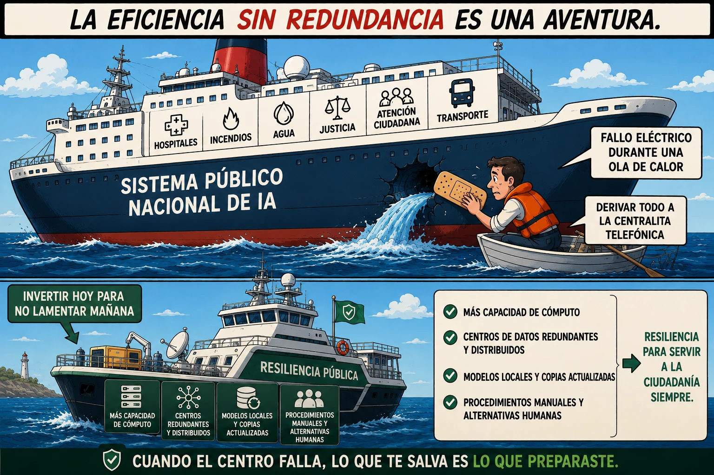

estrategIA #148 ·
Preparar el bote antes del naufragio
El contexto
El gran buque representa servicios públicos concentrados en una infraestructura vulnerable. La embarcación de respaldo traduce visualmente la resiliencia: alternativas distribuidas y humanas para seguir atendiendo cuando falla el centro. Se publicó con el relato Cero cómputo.
Publicado en: estrategIA #148 — HistorIAs veraniegas 2026 (5) Cero cómputo
Leer el texto de la imagen
LA EFICIENCIA SIN REDUNDANCIA ES UNA AVENTURA. HOSPITALES · INCENDIOS · AGUA · JUSTICIA · ATENCIÓN CIUDADANA · TRANSPORTE SISTEMA PÚBLICO NACIONAL DE IA FALLO ELÉCTRICO DURANTE UNA OLA DE CALOR DERIVAR TODO A LA CENTRALITA TELEFÓNICA INVERTIR HOY PARA NO LAMENTAR MAÑANA RESILIENCIA PÚBLICA MÁS CAPACIDAD DE CÓMPUTO CENTROS DE DATOS REDUNDANTES Y DISTRIBUIDOS MODELOS LOCALES Y COPIAS ACTUALIZADAS PROCEDIMIENTOS MANUALES Y ALTERNATIVAS HUMANAS RESILIENCIA PARA SERVIR A LA CIUDADANÍA. SIEMPRE. CUANDO EL CENTRO FALLA, LO QUE TE SALVA ES LO QUE PREPARASTE.